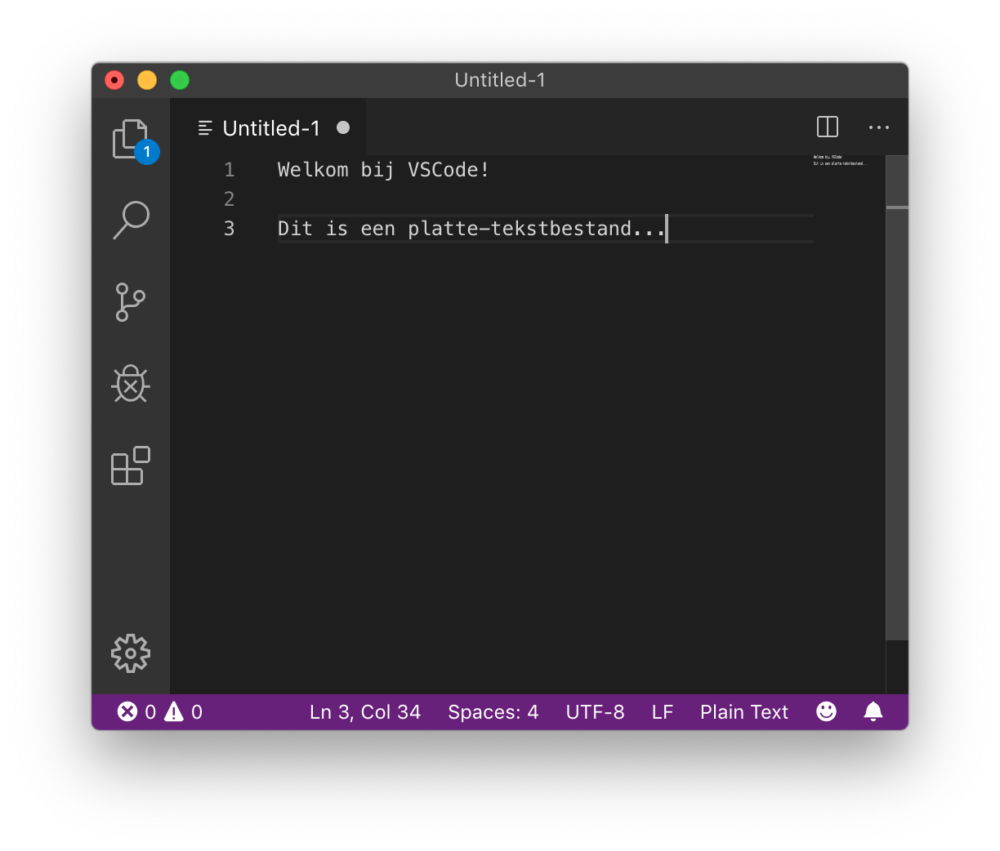
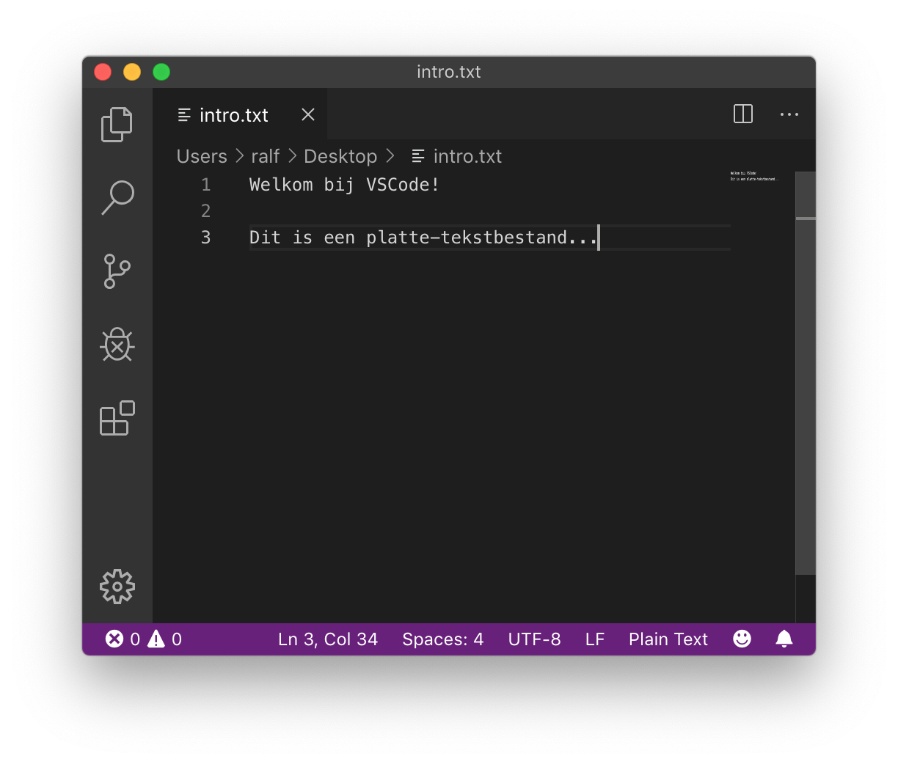
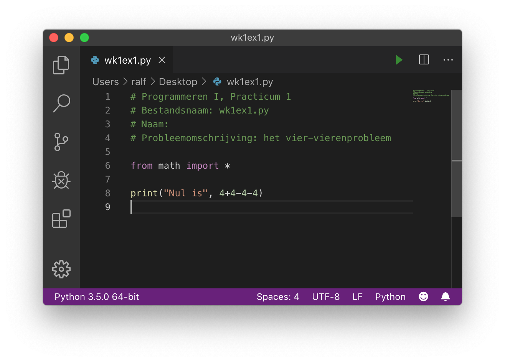

Python installeren#
Het doel van deze opgave is om:
Te zorgen dat je Python en een teksteditor geïnstalleerd krijgt op je computer
Om een “Hallo”-programma te lezen, bewerken en uitvoeren in Python
De software installeren#
Welke software gebruiken we?#
We gebruiken bij Programmeren software die je misschien nog niet hebt. Je hebt de volgende programma’s nodig:
Python; wij gebruiken de laatste versie van python.org.
Een teksteditor; geen tekstverwerker; om je Python-bestanden te bewerken. We raden VSCode aan, een gratis, veel gebruikte tekstverwerker die beschikbaar is voor alle besturingssystemen (macOS, Windows en Linux). Als je al een favoriete teksteditor hebt, kan je die ook gebruiken.
Downloaden en installeren#
Download en installeer Python van python.org.
Pas op
Tijdens het installeren zal worden gevraagd of je Python aan PATH zou willen toevoegen, kies hier voor!

Sinds macOS 11.0 (“Big Sur”) is Python versie 3 op macOS standaard geïnstalleerd maar dit is vaak een oudere versie. We raden je aan de laatste versie van python.org te downloaden en te installeren.
Linux gebruikers hebben het gemakkelijker, als je een up-to-date distributie als bijvoorbeeld Ubuntu, Mint of Arch hebt dan zal je ook een recente Python versie standaard al geïnstalleerd hebben. Controleer dit als volgt op een terminal:
python3 --version
Wacht, ik heb Python al…#
Geen probleem! Zorg er in ieder geval voor dat het een recente versie is.
VSCode installeren#
Visual Studio Code (VSCode) is een gratis teksteditor, met hulpmiddelen voor het bewerken van software broncode, bijvoorbeeld Python.
Download en installeer VSCode van https://code.visualstudio.com/.
VSCode als editor gebruiken#
Probeer VSCode, een teksteditor.#
Teksteditors zijn niet hetzelfde als tekstverwerkers.
Microsoft Word, Google Docs, Pages van Apple of elke andere tekstverwerker kan tekst mooi opmaken
Maar ze geven je geen rechtstreekse toegang tot de daadwerkelijke inhoud van een bestand!
Ze bevatten speciale, onzichtbare tekens met informatie over de opmaak
Aangezien programmeertalen platte tekst (strings met karakters) gebruiken, zijn (platte-)teksteditors de geschikte tool om in te programmeren!
Start dus je teksteditor op; vermoedelijk VSCode, als je die net geïnstalleerd hebt…
Sluit de introductietabs (je kan VSCode vertellen deze niet meer te tonen) en zorg dat je een “leeg bestand” (een leeg venster) ziet.
Type daarna wat tekst, zoals bijvoorbeeld:

Sla dit bestand op als
intro.txtDat kan op je bureaublad of in een speciale map voor Programmeren I; dat mag je zelf bepalen. Dit ziet er dan ongeveer zo uit:

Automatisch opslaan!; het is een goed idee om VSCode in te stellen zodat deze al je bestanden automatisch opslaat Deze optie kan je hier vinden:

We gaan nu je vensters herschikken zodat je efficiënter kan gebruiken; als je aan het programmeren bent kan het erg veel helpen als je zorgt dat de goede vensters tegelijk zichtbaar zijn!
Vensters herschikken! (dit is handig!)#
Probeer je vensters zo te herschikken en in grootte aan te passen zodat je tegelijk je browser (met deze instructies) en je teksteditor, naast elkaar, kan zien.
Het is belachelijk hoe veel efficiënter je wordt als je niet steeds tussen vensters hoeft te wisselen.
Mocht je artistiek zijn of van kookprogramma’s houden: mise-en-place is belangrijk!
Hier is een voorbeeld van een Mac-omgeving:

Neem even een kijkje in de menu’s van VSCode. Je kan bijkvoorbeeld in View de optie Hide Status Bar en Hide Activity Bar kiezen, maar het kleurenschema veranderen is nog leuker!
Kleurenschema! Besteed niet te veel tijd hieraan, maar voel je vrij om je favoriete kleurenschema te kiezen voor VSCode (menu’s: File/Code … Preferences … Color Theme). Dit is erg leuk, misschien zelfs te leuk…
Hierna ga je een terminalvenster openen…
Het terminalvenster!#
In de teksteditor VSCode kan je een terminal open door in het menu View en dan Terminal te kiezen. Je scherm wordt nu opgesplitst:

De bovenste helft is nog steeds de teksteditor.
De onderste helft is nu je terminalvenster.
Ok! We zijn nu klaar voor Python.
Python in een bestand uitvoeren#
We hebben al een teksteditor open staan!
Maak dus in een nieuwe tab een nieuw, leeg bestand (via het menu File en daaronder New File)
Plak (of typ) onderstaande code in het nieuwe bestand
# Programmeren I, Practicum 0
# Naam:
# Probleemomschrijving: Hello world
print("Hello World")
Sla dit bestand op als hello.py in je programmeer folder.
Hierna kan je je Python-programma’s overal opslaan; het is handig om ze te organiseren in mappen.
Vergeet niet om de extensie
.pytoe te voegenAls je het bestand opslaat met de extensie
.py(zoals we dat noemen), zie je dat de Python-code gekleurd wordt.Dit wordt ook wel syntax highlighting genoemd
Als je code niet kleurt, vraag het ons! Het is belangrijk dat je deze kleurrijke aanwijzingen hebt voor de structuur van je programma. Hier is een voorbeeld:

Een bestand uitvoeren!
Om een bestand uit te voeren, moet je weer naar de terminal gaan.
Type
ls( mac) ofdir(windows) om de bestanden in de huidige directory te zienZorg dat je je bestand
hello.pyziet!Als je hem niet zien, gebruik dan
cd ..ofcd Desktopof andere combinaties om naar de juiste directory te gaan.
Typ op de prompt
python hello.py(je kan hier tab completion voor gebruiken). Als je de melding krijgt dat python niet gevonden is kan het zijn dat de Path variabele niet goed is ingesteld (Windows).Dit voert het bestand
hello.pyuit.Als alles goed gaat wordt het programma uitgevoerd en zie je de uitvoer.
Je kan nu je bestand bewerken, opnieuw opslaan en pijltje omhoog drukken om het opnieuw uit te voeren.